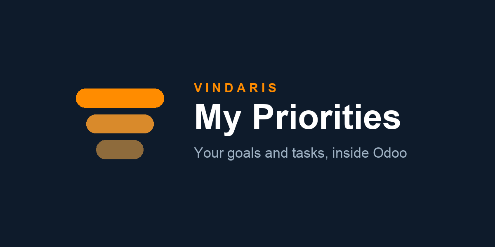

This app adds a My Priorities screen to Odoo that shows the Vindaris goals you own and the tasks assigned to you, pulled live from your Vindaris workspace. It keeps strategy and daily work in one place without leaving Odoo.
An administrator connects Odoo to Vindaris once in Settings. Each person then links their Odoo account to their Vindaris account once, from a signed-in Vindaris page. No API keys are pasted and no passwords are handled in Odoo. The screen is read-only.
A Vindaris workspace at app.vindaris.com. The app works on Odoo Online and on Odoo.sh using the default odoo.com address. A self-hosted Odoo on a custom domain is not supported yet, because the screen is framed from Vindaris.
Vindaris is strategy-execution software. Learn more at vindaris.com.